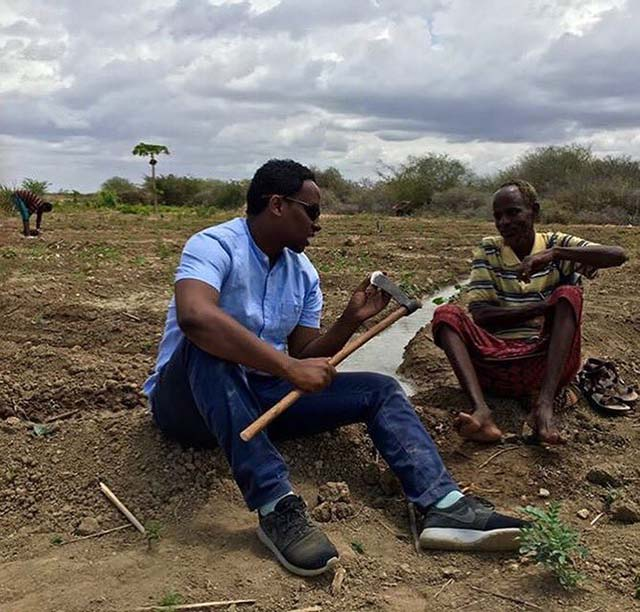

Voice of America
Returning to rebuild
Somalis abroad know what it's like to live amid first-world comforts and convenience. But after years of being away, some have gone back to their distressed homeland, drawn by the chance to improve their country’s and their own prospects.
Information technology enables the transition, say two of them living in Mogadishu.
“I am a dependent of internet for my work, my entertainment, my connection with the family, communication — everything,” says Abukar Albadri, a journalist who fled to Sweden in 2007 after getting numerous death threats for his political reporting. His wife and two young children remain there, but he resettled in the Horn of Africa coastal capital in 2011.
Albadri works for the nonprofit, Denmark-based International Media Support (IMS), coordinating a program to strengthen Somali journalism. Albadri communicates with far-flung colleagues throughout each business day, using email and calling and texting apps such as Skype and Viper.
Likewise, Deeq Mohamed relies on IT to expand the scope of the Fursad Fund, a trust established by and for Somalis to reduce poverty, create jobs and improve civil society. It launched in February 2016, aiming to raise at least $1 a day from 5,000 Somalis around the world. It has collected almost $42,000 toward its initial goal of $1.8 million, said Mohamed, the executive director. He added that fundraising, suspended in August during uncertainty over the repeatedly delayed presidential election, resumed after the February 8 vote choosing Mohamed Abdullahi Farmajo as Somalia’s new leader.
The internet “plays a huge role in connecting with our donors and in [reaching] people with ideas,” Mohamed said. The organization has invested in a greenhouse project, organizing a job fair and making microloans to disabled farmers, for example.
Identifies with diaspora
Mohamed, 34, identifies as part of Somalia’s diaspora. Born to Somali parents, he was raised as an only child in the Netherlands. Despite that country's multicultural society, he said, “I was always made to feel that I was the outsider. … Among the Arabs, you’re not Arab, you’re Somali. That made me want to look more into Somalia and where I was from.”
He first detoured to England, where he studied international relations at London Metropolitan University. Four months of relief work at Dadaab, the Kenyan refugee camp sheltering Somalis, convinced him to head to Mogadishu after graduation to help rebuild. He arrived in June 2012, motivated primarily by “my sense of responsibility” but also by “tremendous opportunities here. … And you can also create job opportunities for yourself here.”
The trust fund’s financing comes solely from Somali residents and the country’s roughly 2 million expats, many of whom already send remittances to family and friends.
The fund has several former government officials on its board, raising concerns about its agenda, the International Business Times reported upon its opening. The news site also noted Somalia’s ranking, by Transparency International, as one of the world’s worst for perceived levels of public sector corruption.
“Any time you have a number of officials on the board … in a country where you’ve had distrust of government for 25 years, you have issues,” Peter Little, an Emory University economic anthropologist who directs its Center for Development Studies, told VOA. But he added that he hopes it will succeed. “In terms of the impact of what [fund organizers are] doing, I would give them the benefit of a doubt."
Fursad Fund leader Deeq Mohamed meets with a disabled farmer in Somalia’s southern Baidoa district. The fund aims to cut poverty, create jobs and improve civil society.
A journalist’s calling
Albadri had freelanced in Mogadishu for international news organizations such as the Los Angeles Times but couldn't find journalism work in Sweden. In 2011, he decided to return to Mogadishu, unswayed by his wife’s teary pleas that he stay.
Her concern was well-founded. Journalists are prime targets in Somalia; for the last two years, the watchdog Committee to Protect Journalists has spotlighted it as the country in which journalists’ killers are most likely to get away with murder. At least three were killed last year, and 62 have met violent ends since 1992. The Islamist militant group al-Shabab is suspected in many recent deaths.
“As a journalist and a worker for an NGO, I feel threat not only from al-Shabab but from so many actors that are in the city,” Albadri admitted. “But my NGO takes care of my security, my safety.”
He carries a smartphone equipped with Vismo, a GPS tracking app he hasn’t yet felt compelled to activate. “Touch the panic button, then they send evacuation forces to pick me up … even if I’m wounded,” he said. “ … It gives you a little confidence.”
Connections to family
Albadri and Mohamed generally use their smartphones and laptops for more upbeat pursuits.
Albadri speaks daily with his family in Sweden. “My boy calls me when he gets back from school,” Albadri said, noting they use Facebook Live or Viper. He speaks each morning and evening with his wife, sustaining connections between his long visits there every few months. He also uses his smartphone for entertainment, playing chess with friends from Somalia to Sweden.
Mohamed talks daily with his wife and young daughter in London, using WhatsApp, FaceTime and Snapchat. In their absence, he watches movies online, looks at YouTube. “I even go on Netflix,” he said, noting that, in his four years in country, internet speed has made a “huge” improvement.
But service in Mogadishu doesn’t quite compare with what the men knew in Europe.
“There are sometimes we don’t have internet,” Albadri said. “Every one hour is like a year without communication.”
VOA Somali service’s Abdulaziz H. Osman reported from Mogadishu, with Carol Guensburg reporting from Washington, D.C.
In the midst of war-torn Mogadishu, young Somali men and women have taken to their mobile phones to engage and connect with one another on social media.
About the project
This project explores internet freedom and how its availability, or restrictions, affect individuals. It’s a joint initiative by Radio Free Europe/Radio Liberty, Middle East Broadcasting Networks, Voice of America, Radio Free Asia and the Office of Cuba Broadcasting. They’re overseen by the Broadcasting Board of Governors.
About VOA
Voice of America provides trusted and objective news and information in 45 languages to a measured weekly audience of more than 236.6 million people around the world. For nearly 75 years, VOA journalists have told American stories and supplied content that many people cannot get locally: objective news and information about the US, their region and the world.